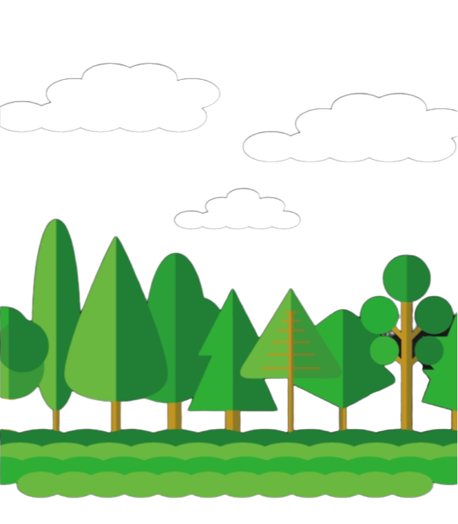

NUESTRO PROYECTO
PRESENTACION
Proponemos una ONG argentina comprometida con la recaudación de fondos para respaldar la conservación de los bosques nativos del país
, en línea con el Objetivo de Desarrollo Sostenible (ODS) "Vida de Ecosistemas Terrestres". A través de nuestro sitio web,
nos proponemos proporcionar información detallada sobre las diversas formas en las que nuestra organización
contribuirá a la preservación de estos ecosistemas, destacando proyectos específicos y los impactos esperados.
Para atraer tráfico a nuestro sitio web, implementaremos estrategias publicitarias en redes sociales,
apuntando a construir una audiencia comprometida. Buscamos no solo informar, sino también involucrar a la comunidad en la protección activa del medio ambiente argentino. Nuestro objetivo es generar conciencia, fomentar la participación y, a través de donaciones, lograr un impacto positivo y sostenible en la protección de nuestros valiosos ecosistemas.
Publico
Nombre del sitio web
proyecto eco-donarDominio
Se utilizara el dominio proveniente de GitHub PagesLogo

Paleta de Colores
Descripcion del sitio web
.jpg)
inicio
Descripción de la organización y su misión.
nuestra forma de ayudar
Tres secciones secundarias, cada una destacando un bosque nativo y sus desafíos.
donar
Primera sección: Explicación de la flexibilidad en las donaciones y cómo se utilizarán los fondos.
Segunda sección: Testimonios de donadores.
Tercera sección: Opciones de pago y formulario de donación.
Carpeta del Proyecto
Accede a la carpeta de nuestro proyecto con el siguiente link
prototipado
Accede a el prototipado de nuestra web con el siguiente link
Roles de los integrantes
Diseñador ux/ui: Santino bertoia
Maquetador:
Programador: Lautaro Guardia
Comunicador Web: